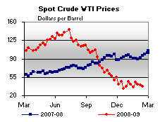
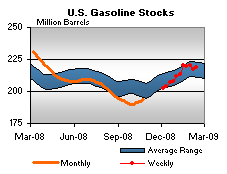

Released on February 19, 2009
(Next Release on February 25, 2009)
You’re invited!
The Energy Information Administration (EIA) will hold its 2009 Energy Conference at the Washington Convention Center on April 7 and 8, 2009, with the title “A New Climate for Energy.” Last year’s 30th anniversary conference was a great success, hosting more than 1,200 participants over two days of presentations and round-table discussions featuring Energy Secretaries Bodman and Schlesinger, Chairman Dingell, Senator Domenici, and Daniel Yergin, and many other distinguished guests.
This year, we will focus the Energy Conference on topics of particular interest to the new Administration and Congress, both in terms of providing a context for energy policy decisions and providing a forum to discuss near-term energy challenges. The plenary sessions will include presentations by William D. Nordhaus of Yale University on the global financial crisis and its implications for the energy sector and John W. Rowe of the Exelon Corporation about energy in a carbon-constrained world. Ten individual sessions will deal with topics related to petroleum, natural gas, renewables, and electric power. We are including a brief summary of some of the sessions that deal with petroleum and natural gas.
What’s Ahead for Natural Gas Markets?
The natural gas industry is in the midst of some of the most significant changes in its history, unlocking new sources of unconventional supply, expanding access to international markets, and integrating more closely with a wide variety of innovative and volatile markets. In the context of the economic downturn, nothing about the short-term prospects for the industry is clear. Moderator Steve Harvey, Director of EIA’s Office of Oil and Gas, has assembled a panel of some of the most interesting and insightful personalities dealing with natural gas issues today for a certainly wide-ranging and possibly even rollicking conversation about the industry. Topics to be discussed include the emerging role of shale gas production in the United States, recent supply and consumption trends, the effects of pipeline constraints on flows of Rockies’ natural gas and resulting prices and state revenues, and the impact of recent policy initiatives on natural gas companies. The conversation will be unscripted and topical, with the last 20 minutes drawing in questions and comments from the audience.
The Growing Demand for Liquid Fuels
Under almost all EIA long-term projection scenarios, global demand for crude oil and petroleum liquids increases through 2030. Glen Sweetnam, Director of the International Economic and Greenhouse Gas Division of EIA’s Office of Integrated Analysis and Forecasting (OIAF), will moderate a session covering both where supply is likely to come from under these scenarios and what could happen to change the expectation of increased demand. Panel themes may include the geopolitics of energy supply, supply growth both within OPEC and outside, peak oil concerns and prospects for U.S. production.
Financial Markets and Short-Term Energy Prices
The recent rise and fall of energy prices has raised many questions about the relationships between the physical and financial markets for energy. Can information obtained from financial markets enhance the understanding of the physical market? Can activity in the financial markets cause short-term price fluctuations in the spot market with no change in the underlying fundamentals? Tancred Lidderdale, team leader in the Energy Markets and Contingency Information Division (EMCID) in EIA’s Office of Energy Markets and End Use (EMEU), will moderate a panel from government, academia, and business, discussing the major unresolved policy and research issues related to the financial and physical energy markets.
Investing in Oil and Natural Gas – Opportunities and Barriers
The session “Investing in Oil and Natural Gas – Opportunities and Barriers”, moderated by Bruce Bawks, team leader in the EMCID of EMEU, will consider investment in the current low price and weak economic environment. Many oil and gas producers have indicated that they are cutting back on capital expenditures and the panel will explore the implications for future production. The panel will discuss other obstacles to investment and what regulators and policy makers could do to help overcome these barriers. Even difficult investing conditions provide opportunities and the panel will look at where opportunities may exist in the current environment. Issues related to investments in oil and natural gas both in the United States and internationally may also be covered. Panelists from industry, academia, and the investment community will provide their perspective on the current investment environment.
In addition to the above mentioned topics, the conference will also feature sessions on various other energy subjects including: The Future for Transport Demand, moderated by Andy Kydes, Senior Technical Advisor in OIAF; Electric Power Infrastructure: Status and Challenges for the Future, moderated by Scott Sitzer, Director of EIA’s Office of Coal, Nuclear, Electric and Alternate Fuels; Renewable Energy in the Transportation and Power Sectors, moderated by Michael Schaal, Director of the Division of Oil and Gas in OIAF; Energy Data Needs, moderated by Margot Anderson, Director of EMEU; Energy and the Media, moderated by John Anderson, Journalist-in-Residence at Resources for the Future; and Greenhouse Gas Emissions: What's Next?, moderated by Acting EIA Administrator, Howard Gruenspecht.
So please RSVP to our invitation by registering for this event. Registration for the conference is free-of-charge and is now open on-line. The conference agenda is also available on our website for your perusal. Please join us to make EIA’s second thirty years as much of a success as the first!
Residential Heating Fuel Prices Continue Their Fall
Residential heating oil prices receded for the fifth consecutive week during the period ending February 16, 2009. The average residential heating oil price fell 5.1 cents per gallon last week to reach 230.8 cents per gallon, a drop of 108.7 cents per gallon from this same time last year. Wholesale heating oil prices decreased 7.0 cents per gallon to reach 140.5 cents per gallon, which was lower by 133.7 cents per gallon compared to the same period last year.
The average residential propane price decreased 1.0 cent per gallon from last week to reach 231.0 cents per gallon. This was a drop of 24.0 cents from the 255.0 cents per gallon average for this same time last year. Wholesale propane prices fell 1.7 cents per gallon, retreating from 86.3 cents to 84.6 cents per gallon. This was a decrease of 62.9 cents from the February 18, 2008 price of 147.5 cents per gallon.
Gasoline Prices Continue Climb; Diesel Prices Slip for Fifth Straight Week
For the third week in a row, the national average price for regular gasoline increased. The average price rose 3.8 cents to 196.4 cents per gallon. Over the past three weeks, the national average price has increased 12.6 cents, but remains 107.8 cents below the price a year ago and 215 cents below the all-time high set on July 7, 2008. Although prices rose in all regions of the country, the increases ranged from just one-tenth of a cent in the Gulf Coast to nearly 7 cents on the West Coast. On the East Coast, the price increased 3.8 cents to 195 cents per gallon. In the Midwest, the price rose 4.2 cents to 190.6 cents per gallon. The average price on the Gulf Coast was essentially unchanged, inching up just one-tenth of a cent to 183.8 cents per gallon. After rising 3.9 cents, the average price in the Rocky Mountains once again remained the lowest in the Nation, at 181.9 cents per gallon. Advancing more than any other region for the second consecutive week, the price on the West Coast jumped 6.9 cents to 224.4 cents per gallon, the highest of any region and 89.3 cents below a year ago. The average price in California jumped 7.6 cents to 229.1 cents per gallon.
For the fifth successive week, the national average price of diesel fuel fell and, once again, prices fell in all regions of the country. The national average price slid 3.3 cents to 218.6 cents per gallon, 121 cents below the price a year ago, and 257.8 cents below the all-time high. The price on the East Coast fell the most among the major regions, dropping 4.6 cents to reach 225 cents per gallon, 119.4 cents less than a year ago. The price in the Midwest slipped 3.6 cents to 213.7 cents per gallon. Dropping 2.3 cents to 213.3 cents per gallon, the average price in the Gulf Coast remained the lowest of any region. The price in the Rocky Mountains fell 2.8 cents to 218.3 cents per gallon. Although the West Coast had the highest regional price, dipping only 0.8 cent to 228.4 cents per gallon, it was 117 cents lower than last year. The average price in California slipped 0.7 cent to 226.2 cents per gallon.
Propane Draw Largest of Season
The stock draw on the Nation’s primary supply of propane was the largest of the winter heating season, down 3.2 million barrels last week to an estimated 40.0 million barrels as of February 13, 2009. The East Coast and Midwest regions continued to feel the brunt of winter weather with inventories plunging lower by 0.4 million barrels and 0.7 million barrels, respectively. In particular, New England has grappled with late season supply problems as inventories approach near historical lows for this time of year. While the Gulf Coast posted a weekly decline of 2.0 million barrels destined for the major consuming areas, the combined Rocky Mountain/West Coast region fell by less than 0.1 million barrels during this same time. Propylene non-fuel use inventories also reported a sharp decline last week, falling 0.4 million barrels to 2.9 million barrels, about 7.1 percent of total propane/propylene inventories compared with the prior week’s 7.6 percent share.
Text from the previous editions of “This Week In Petroleum” is now accessible through a link at the top right-hand corner of this page.
| Retail Prices (Cents Per Gallon) | |||||||
 |
|||||||
| Retail Data | Changes From | Retail Data | Changes From | ||||
| 02/16/09 | Week | Year | 02/16/09 | Week | Year | ||
| Gasoline | 196.4 | Heating Oil | 230.8 | ||||
| Diesel Fuel | 218.6 | Propane | 231.0 | ||||
| Spot Prices (Cents Per Gallon*) | |||||||||||||||||||||||||||||||||||
|  | |||||||||||||||||||||||||||||||||||
|
|||||||||||||||||||||||||||||||||||
| *Note: Crude Oil WTI Price in Dollars per Barrel. | |||||||||||||||||||||||||||||||||||
| Stocks (Million Barrels) | |||||||
|  | |||||||
| Stocks Data | Changes From | Stocks Data | Changes From | ||||
| 02/13/09 | Week | Year | 02/13/09 | Week | Year | ||
| Crude Oil | 350.6 | Distillate | 140.8 | ||||
| Gasoline | 218.7 | Propane | 40.012 | ||||